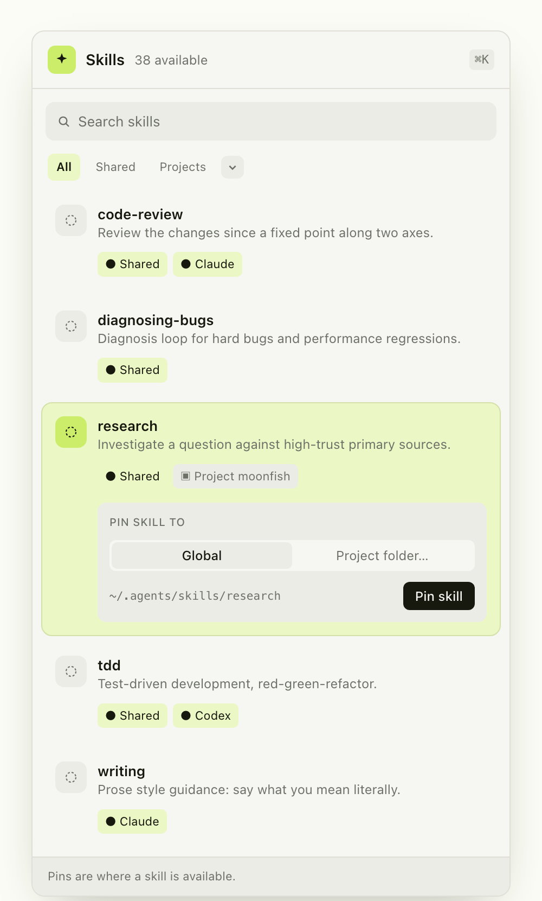

macOS menu-bar library
Every skill.
One place.
SkillPin lists every agent skill installed on your Mac and the directories each one is available in.
Free & open source · macOS 14+ · Source on GitHub

The problem
Skills don’t live in one place.
Claude, Codex, and other agents read their own folders. Project skills add another layer. Finding what you have means opening paths and reading frontmatter.
research
Investigate a question against high-trust primary sources.
The pin model
One skill. Its pins underneath.
A skill is the folder with a SKILL.md. A pin is a location where that skill is available. SkillPin reads them together as one list. Every pin is a copy, and a copy that drifts from the canonical folder is marked.
Auto-discovery
If it has SKILL.md, it shows up.
SkillPin walks the directories your agents already use, including project folders you scan.
⌄ skills
research / SKILL.md
⌄ ~/.claude
⌄ skills
writing / SKILL.md
⌄ moonfish/.claude/skills
Install
Download it. Keep it in the menu bar.
SkillPin is a SwiftUI app for macOS 14 or later, with no dependencies and no dock icon. Download the disk image or install it with Homebrew.
Download for macOS ↓The build is not signed with an Apple Developer ID yet. On first launch, approve it under System Settings → Privacy & Security.
View the source →0.1.0
Browse, search, filter, pin.